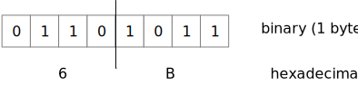
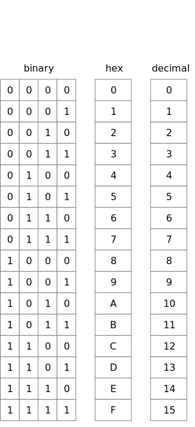

What the Hex?
Contents
What the Hex?#
Internally, modern digital computers use binary exclusively.
Binary is cumbersome for humans. I can tell at a glance
that 27 is a little larger than 25, but it’s a little
harder to see that 11011 is a little larger than 11001.
Most of the time we can ignore the internal binary representation. We mainly use decimal notation in our Python programs, for example. Occasionally, though, we need a good way to write, read, and think about the binary representation, such as when we are shifting and masking values.
Binary is cumbersome, because it requires so many digits.
Decimal allows us to write numbers with fewer digits,
but we cannot convert between decimal and binary in our
heads (at least I can’t). Can we find a number system that
is both easy to relate to binary and compact?
Casting a Hex#
If we use a number base that is $\(2^k\)\(, each digit in that number system will exactly represent \)\(k\)\( binary digits. 10 is not a power of two, but 8 and 16 are. Two popular bases for representing binary numbers in human-readable form are octal (base 8) and hexadecimal (base 16), often called "hex". Octal uses digits 0..7, and hexadecimal uses digits 0..9ABCDEF to represent values from 0 to 15. Hexadecimal, is particularly convenient because each hexadecimal digit represents 4 binary digits. The smallest addressable unit of computer memory is typically the _byte_, which is 8 binary digits, and a byte can be represented by exactly two hexadecimal digits. For example, the binary number \)\(01101011_2\)\( is \)\(6B_{16}\)$.

Hex Digit Values#
The following table relates 4-bit binary numbers to hex digits and decimal values. It is not necessary to memorize this table, and most programmers don’t. You should, however, remember that $\(0_{16}\)\( is \)\(0000_2\)\( and that \)\(\textrm{F}_{16}\)\( is \)\(1111_2\)\(. Since binary values are often grouped into 8-bit _bytes_, it is also useful to remember that \)\(\textrm{FF}_{16}\)\( is \)\(1111\,1111_2\)\( or \)\(255_{10}\)$.

Hex notation in Python#
Just as Python allows a number to be written in binary notation by prefixing it with ‘0b’, Python allows a number to be written in hexadecimal notation by prefixing it with ‘0x’. (If for some reason you wish to write a number in octal, prefix it with ‘0o’.)
At the risk of repetition, I want to emphasize again that writing a number in hexadecimal notation does not mean that it is stored as a “hexadecimal number”. It is stored as a binary number, just as a number written in decimal notation is stored as a binary number.
>>> 0x11
17
>>> 0x11 == 17
True
The hex function works like the bin function to produce a
string of characters representing a value in hexadecimal
notation.
>>> hex(17)
'0x11'
When you will see hex#
By default, Python normally prints numbers is decimal.
However, there are a few cases in which Python uses
hexadecimal notation because it is likely to be useful
to have a notion of the internal binary value. One
you may already be familiar with is the built-in repr
function for objects.
>>> class JustAnExample:
... pass
...
JustAnExample()
<__main__.JustAnExample object at 0x1077f2f10>
This repr is telling us that the new object
is at memory address $\(1077F2F10_{16}\)$. We
are unlikely to want to know the decimal value
of that address. We might, however, get some
use of knowing the hexadecimal value. For example,
it might help us understand the default hash
function for objects:
>>> ob = JustAnExample()
>>> ob
<__main__.JustAnExample object at 0x1078030d0>
>>> hash(ob)
276300557
>>> hex(hash(ob))
'0x1078030d'
The decimal value provides us no useful information. Even if we had the memory address in decimal notation (4420808912), we would have a hard time seeing the relation between 4420808912 and 276300557. At a glance, though, we can see the relation between 0x1078030d0 and 0x1078030d. Clearly the hash value is just the memory address shifted right 4 bits!
Will you ever see octal?#
While octal is much less commonly used than hexadecimal, you are likely to encounter it occasionally when using Unix or Linux systems. For example, octal codes can be used to set file read and write permissions in Unix (but mnemonic alphabetic codes can also be used). The use of octal in Unix is an historical artifact from computers of the 1970s. If Unix were being designed for the first time today, I am confident its designers would have chosen hex rather than octal for representing bit patterns.
Summary#
It’s all binary inside the computer, but binary is cumbersome for humans to read, write, and think about. Hexadecimal, or just ‘hex’, conveniently uses one hex digit to represent four binary digits. It is the most common notation used when we care about patterns of binary digits.